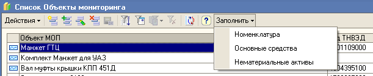

Конфигурация "1С-Рейтинг: Налоговый мониторинг".
Регистр сведений предназначен для хранения соответствий кодов ТН ВЭД элементам номенклатуры, номенклатурных групп, нематериальных активов и основных средств. Так, для каждого (по возможности) элемента перечисленных справочников создается новая запись регистра и указывается код ТН ВЭД из справочника "Классификатор кодов ТН ВЭД".
Для облегчения работы пользователя возможно автоматическое заполнение. При помощи кнопки "Заполнить" и выбора в списке справочника - источника заполнения:

При выборе одного из пунктов подменю, откроется форма групповой обработки объектов мониторинга.
Доступна также возможность добавлять объекты мониторинга из справочников "Номенклатура", "Основные средства" и "Нематериальные активы", с помощью перетаскивания мышью, при этом при переносе групп, добавляются все элементы переносимой группы, а также элементы подгрупп. Элемент не будет добавлен, в случае, если данный элемент уже имеется в списке.